Hi, we're Hannah, Marena, and Colleen
from mapbox
This workshop will cover:
- The Mapbox platform
- Mapbox use cases
- OpenStreetMap
- Exercise: Visualize data on a map with Mapbox Studio
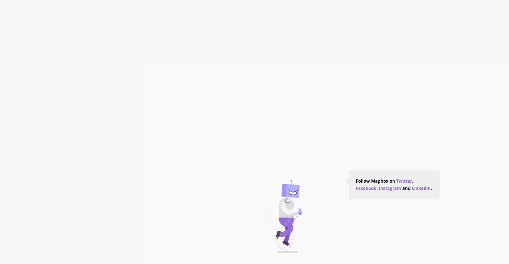
Mapbox wants to change the way people navigate cities and understand
our planet.
We do this by providing building blocks for integrating brand and location into any mobile or online app.
Mapbox Studio leverages:
- Styles API - read and write map styles, fonts, and icons
- Uploads API - transforms geo data sources and files into performant production-ready tilesets
- Datasets API - offers persistent storage for custom geo data and allows add and edit features
- Maps API - serves our raster and vector tiles (aka final maps you see)
- Static API - returns static maps and raster tiles from styles
- Tileset API - stores metadata for raster and vector tilesets
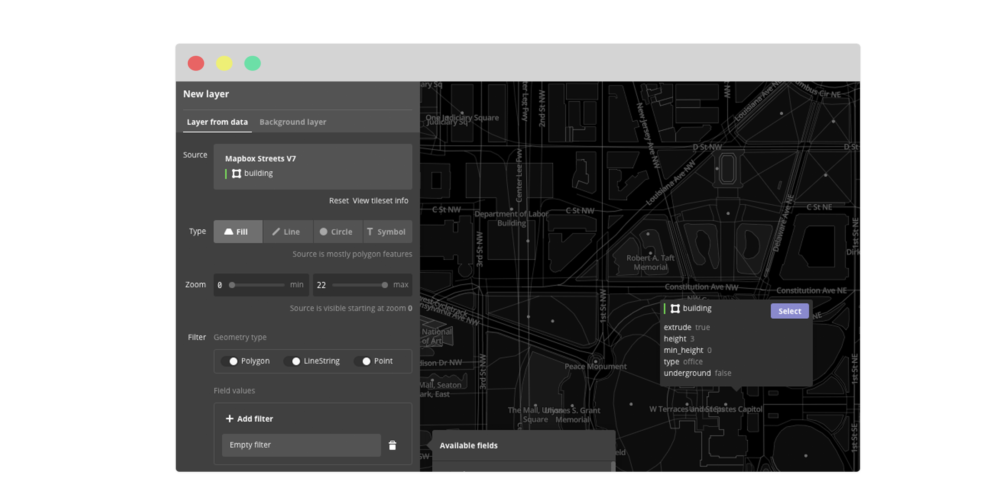
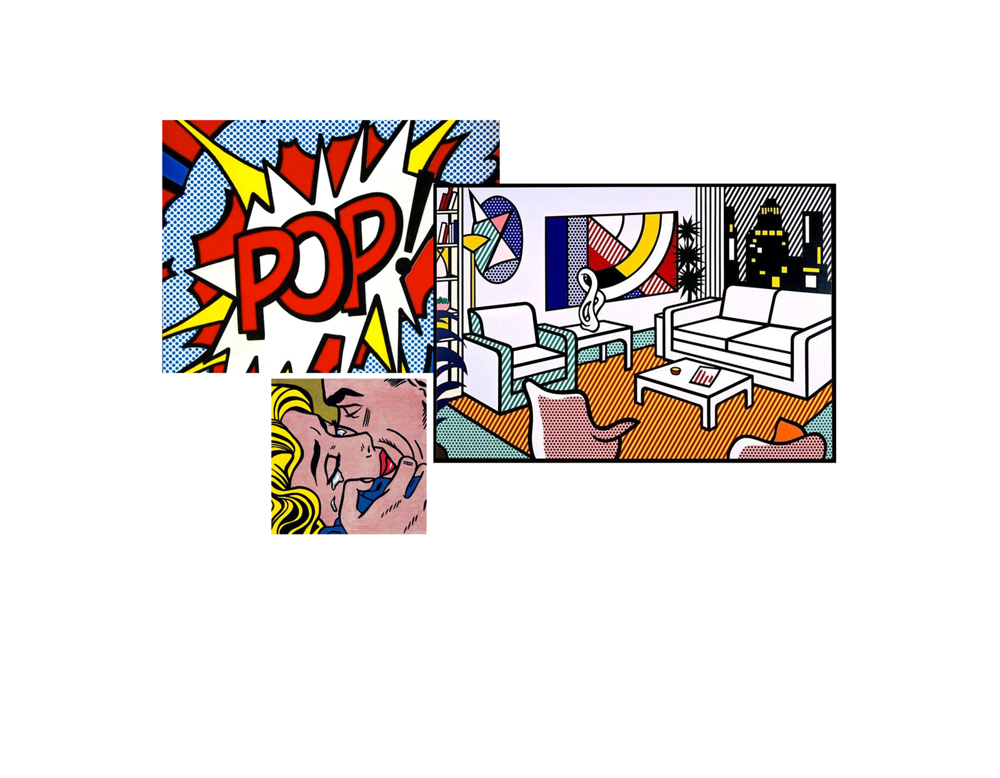
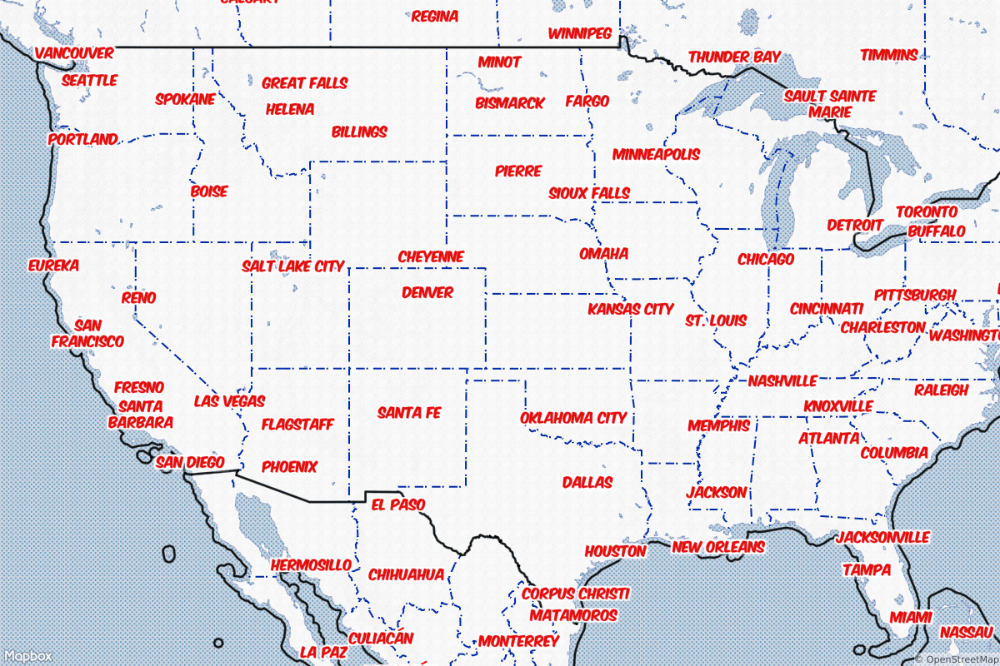
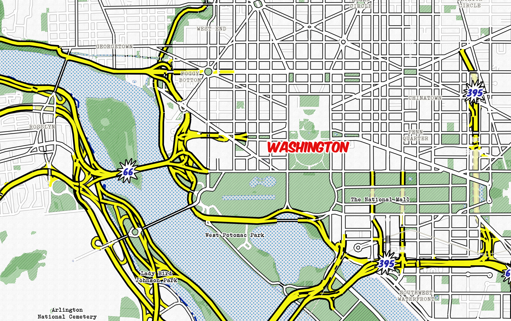
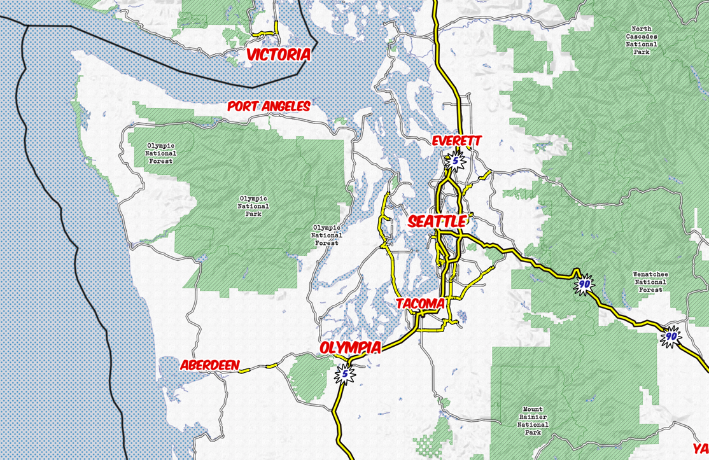
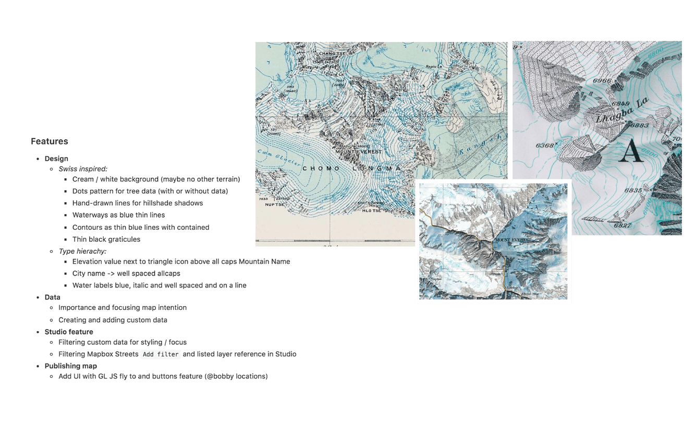
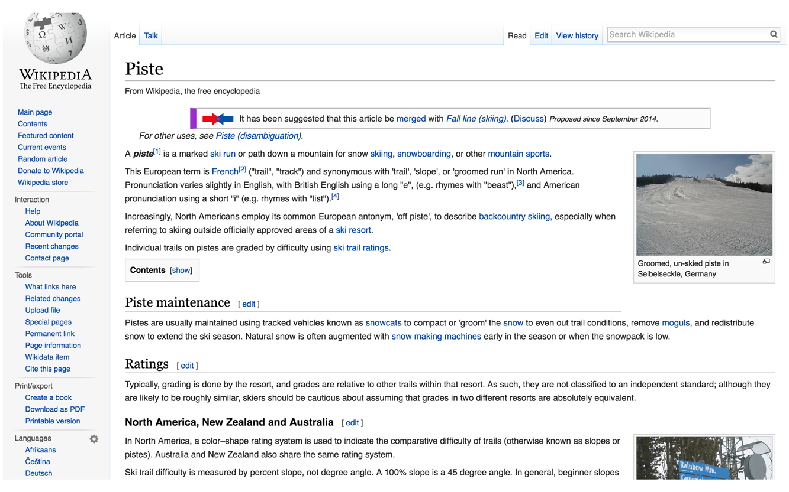
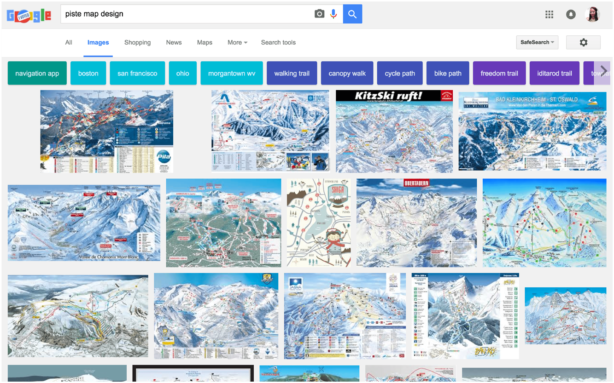
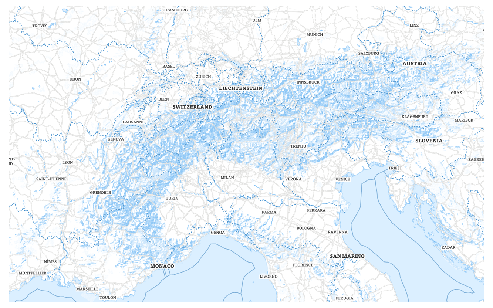
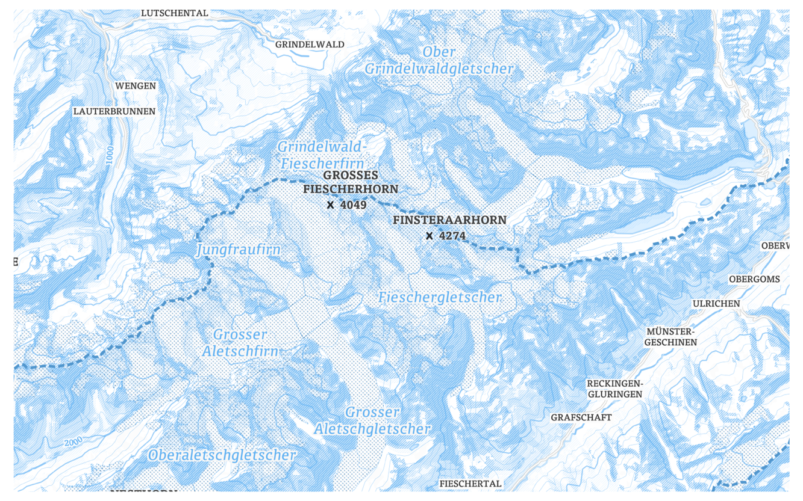
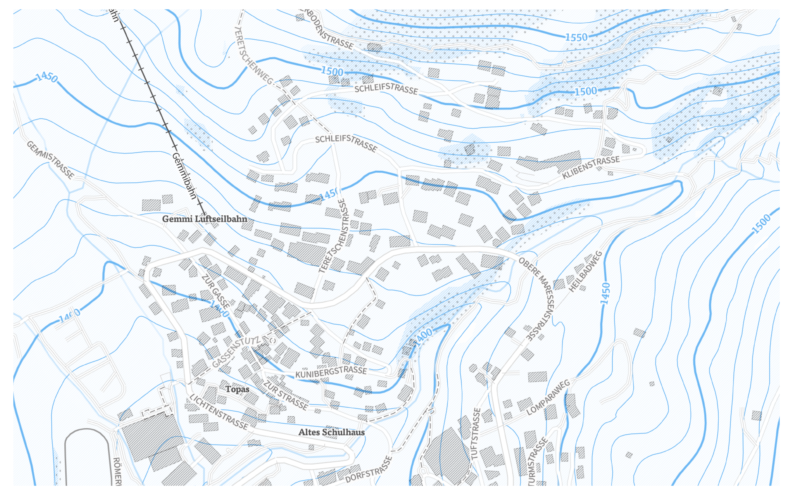
- Mapbox Streets - a complete basemap, perfect for incorporating your own custom data.
- Mapbox Outdoors - a general basemap tailored to hiking, biking, and sport.
- Mapbox Dark - simple, clean map with a dark backdrop. Well-suited for data visualizations.
- Mapbox Light - simple, clean map with a light backdrop. Well-suited for data visualizations.
- Mapbox Satellite Streets - global imagery enhanced with road and label hierarchy.
- Mapbox Traffic Day - traffic on a light streets basemap that highlights congestion.
- Mapbox Traffic Night - Traffic on a dark streets basemap that highlights congestion.
- Style background.
- Add and style water layer.
- Add and style road layer.
- Filter road layer.
- Add and style place labels.
- Filter place labels.
thank you.
happy mapping!